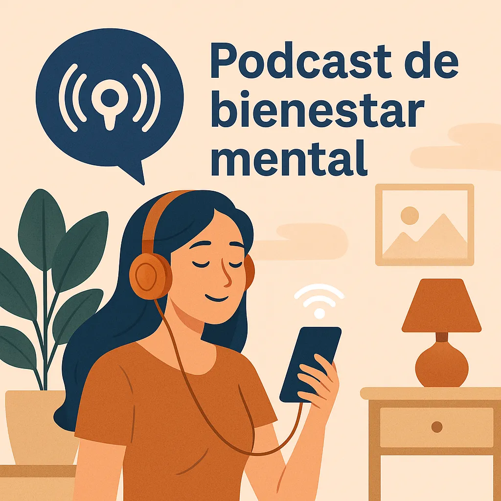
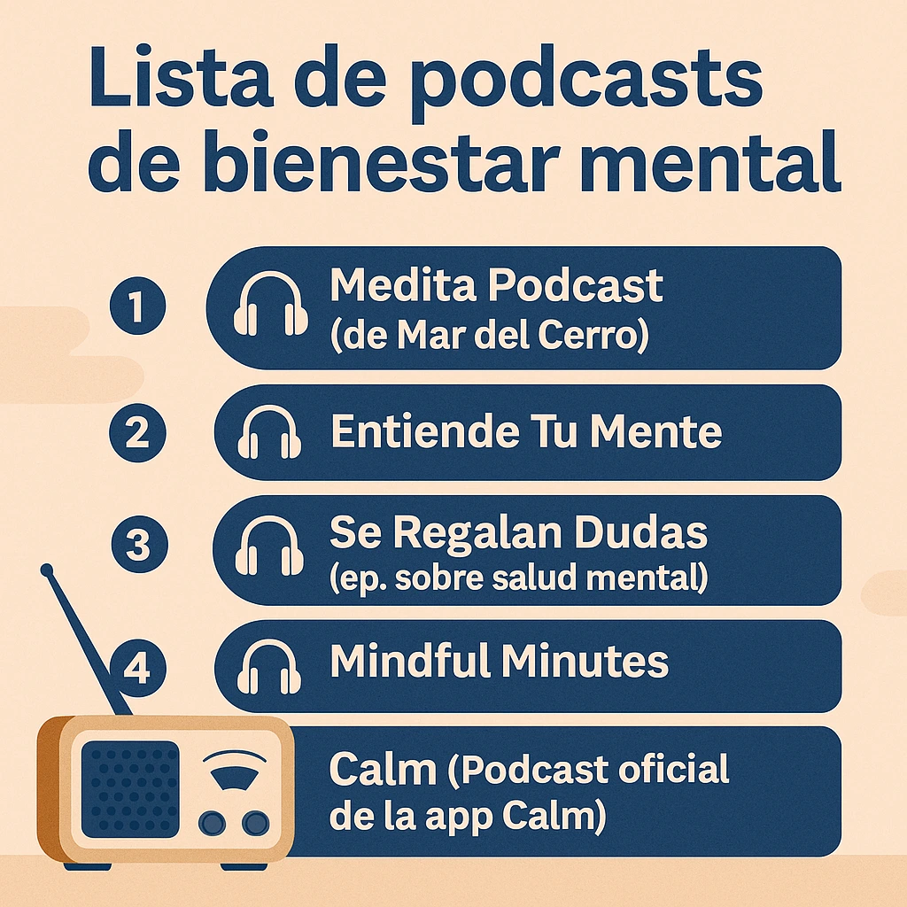

Podcast de bienestar mental: top 5 recomendados
Escuchar un podcast puede ser una forma efectiva y agradable de cuidar tu salud mental. Hoy en día, hay opciones que combinan meditación, mindfulness, entrevistas inspiradoras y herramientas prácticas. Aquí te mostramos los 5 mejores podcasts de bienestar mental para relajarte, motivarte y desconectar del ruido diario.
¿Por qué escuchar podcasts para tu bienestar mental?
Los podcasts de bienestar son accesibles, gratuitos y puedes escucharlos mientras caminas, cocinas o antes de dormir. Son una excelente alternativa para mantener tu mente calmada y nutrida, sobre todo si buscas recursos adicionales a tus prácticas como la meditación guiada o tu journal de ansiedad.
🎧 Top 5 mejores podcasts de bienestar mental
1. Medita Podcast (de Mar del Cerro)
Breves sesiones guiadas de mindfulness, meditación y respiración. Ideal para principiantes y para quienes tienen poco tiempo. Muchos episodios duran menos de 15 minutos.
2. Entiende Tu Mente
Psicología aplicada en episodios de 20 minutos que ayudan a entender emociones, ansiedad, autoestima y más. Perfecto para quienes quieren reflexionar desde la razón.
3. Se Regalan Dudas (ep. sobre salud mental)
Conversaciones honestas sobre bienestar emocional, límites, autoaceptación y salud mental desde experiencias personales y profesionales. Ideal para quienes buscan conexión auténtica.
4. Mindful Minutes
En inglés, centrado en prácticas breves de meditación y respiración consciente. Puedes usarlo como complemento de los micro-hábitos diarios.
5. Calm (Podcast oficial de la app Calm)
Una mezcla entre narraciones relajantes, sonidos calmantes y consejos de salud mental. Ideal para escuchar antes de dormir o para calmar la mente rápido.
¿Cómo integrar estos podcasts en tu rutina diaria?
Escoge uno o dos y añade 10-15 minutos diarios para escucharlo. Puedes hacerlo al despertar, mientras haces tareas simples o en tu rutina mañanera. Te ayudará a empezar el día con calma y foco.
Consejos para elegir el podcast ideal
- Prueba varios y quédate con el que conecte contigo emocionalmente.
- Escucha en momentos donde no haya interrupciones.
- Crea un espacio cómodo o usa auriculares de calidad.
¿Ya escuchas podcasts? ¡Combínalos con otras prácticas!
Un podcast puede ser más efectivo si lo complementas con otras herramientas de autocuidado como una guía de meditación completa, ejercicios breves de mindfulness, o un diario de gratitud.